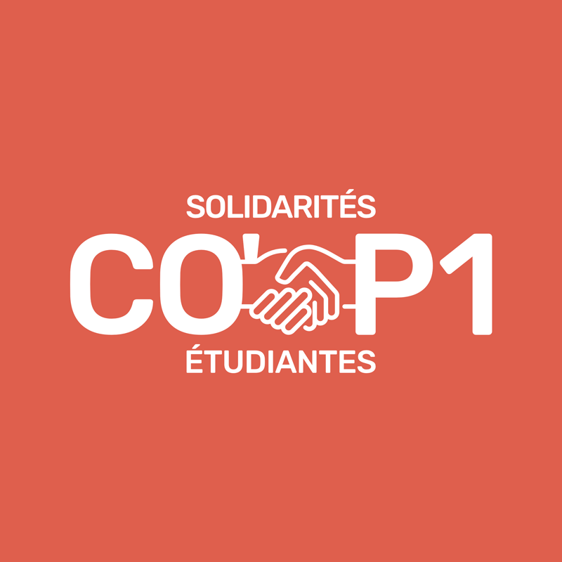

Hafsatou Amadou Doussa
Recherche de Stage de Fin d'Études (PFE)Ingénieure Data & IA
À propos de moi

Bienvenue sur mon portfolio
J'aime donner du sens à la donnée : la nettoyer, la structurer, la modéliser et surtout raconter ce qu'elle révèle pour la rendre utile et accessible à tous. Curieuse et rigoureuse, je me suis formée aussi bien à l'analyse (Power BI, PL-300) qu'à l'ingénierie de pipelines et au Machine Learning / NLP.
Je recherche actuellement un stage de fin d'études de 6 mois à partir de février 2027 porté par des projets concrets, à impact humain.
Compétences Techniques & Soft Skills
De la collecte à la restitution de la donnée
Environnements Cloud & Data
Data Integration & ETL
Data Management
Data Exchange
Data Science, NLP & IA Générative
Datavisualisation
Programmation & BDD
Soft Skills
en pointillés outils en cours d'apprentissage (5e année)
Expériences professionnelles
Stagiaire Data Science & IA expérience phare
Mai – Août 2026- Structuration, nettoyage et validation d'un corpus de plus de 12 000 paires textuelles pour des tâches de similarité sémantique et de Stance Detection.
- Conception et développement d'un pipeline automatisé de fact-checking de bout en bout : collecte de données web, recherche d'information et validation sémantique par modèles d'inférence (Cross-Encoders NLI), déployé en environnement conteneurisé (Docker).
- Évaluation de la cohérence des annotations via des indicateurs statistiques (Kappa de Fleiss) et suivi des résultats via un tableau de bord interactif.
Animatrice de Communauté (Stagiaire)
Juil. – Août 2025- Responsable de la gestion et de l'animation des réseaux sociaux de l'association.
- Organisation en autonomie de plusieurs activités, sans supervision directe de sa hiérarchie.
- Coordination transverse au sein d'une équipe de 8 personnes, communication avec des interlocuteurs variés.
Assistante Back-Office Bancaire & Contrôle Qualité
Juil. – Sept. 2023- Gestion du traitement des chèques : vérification et suivi de leur paiement.
- Scan et transmission des chèques aux banques partenaires dans le cadre de la compensation interbancaire.
- Archivage rigoureux des données et documents bancaires, garantissant leur traçabilité.
Parcours académique
Cycle Ingénieur Big Data & IA
Spécialisation Business Intelligence, Data Engineering, IA, Statistiques.
Certification Microsoft PL-300
Préparation en cours, en parallèle du cycle ingénieur.
Classes Préparatoires Scientifiques
Projets data
Du pipeline à la restitution

Pipeline NLP de Fact-Checking & Analyse Temporelle
Mai – Août 2026 • Stage de recherche, ISIA Lab (UMONS)Conception d'un pipeline d'extraction automatisé (API Google Fact Check, SearxNG conteneurisé sous Docker) pour identifier l'origine des désinformations. Implémentation et benchmark d'architectures sémantiques (Bi-encodeurs et Cross-encodeurs) et création d'un dataset pour l'analyse statistique du décalage de fact-checking.
 En cours • Data Management
En cours • Data Management
Architecture MDM : Fiabilisation d'un SI Universitaire
2026-2027 • Étude de cas IBIConception d'une démarche Master Data Management (MDM) pour un réseau universitaire. Analyse de l'existant, résolution des problématiques de qualité de données (doublons, nomenclatures hétérogènes) et modélisation d'architectures cibles pour fiabiliser le système d'information décisionnel.
 Data Engineering
Data Engineering
Pipeline ELT & Dashboard, Amazon Sales & Reviews
2026Architecture ELT de bout en bout avec Airbyte : ingestion automatisée d'un dataset massif vers une base PostgreSQL, modélisation des données et dashboard Power BI connecté en direct pour le monitoring dynamique des KPI.
 Data Science
Data Science
Modélisation prédictive : Marché Airbnb NYC
2025Structuration d'un dataset de 48 884 annonces via R (Tidyverse), analyse exploratoire et visualisations interactives, puis modélisation prédictive du prix (régression linéaire vs. arbre de décision, évaluation par RMSE).
 IA appliquée
IA appliquée
Pipeline IA Générative sous contrainte (ComfyUI)
2025-2026 • Projet d'équipe, 5 étudiantsDéveloppement des workflows Video-to-Video (ReActor) et Image-to-Video (LivePortrait) pour la génération d'avatars parlants. Diagnostic de contraintes GPU (CUDA OOM, conflits de dépendances) et optimisation des paramètres de diffusion, avec un gain de temps de 30 %.
Langues
Centres d'intérêt
- Volley-ball : Pratique active en club
- Cuisine : Création culinaire
- Bénévolat associatif :
Aide alimentaire et étudiante avec
 et
et

- Tutorat : Mathématiques (PRREL) et accompagnement académique (JUNIA)